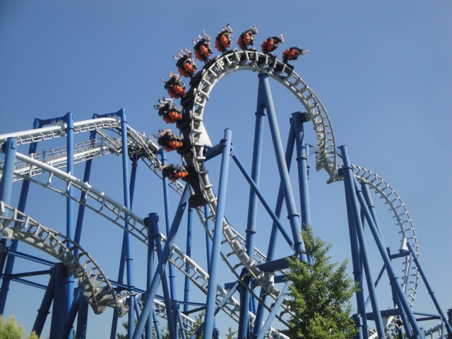
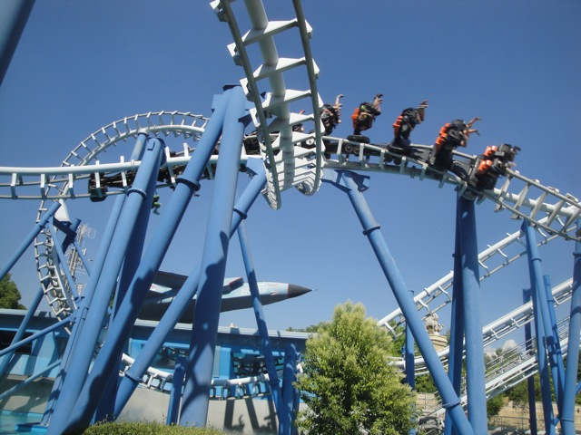

| |
Blue Tornado Review

We're here at Gardaland to ride an SLC. However, this is not your typical SLC. Nope, this is an SLC with a BONUS HELIX!!! YAY!!! This mean, absolutely nothing. After climbing in the seat and pulling down the shoulder harness, you dispatch. Up the lift you go. Once you reach the top, it's all downhill from there. You curve and away and down you go! There isn't that much pain in the first drop. Once you reach the bottom of the first drop, it's all fast. Then you soar up in the sea serpent roll. You expect it to hurt after riding other SLCs, but to our suprise, there's no pain! Ok, I wouldn't say no pain, but it's all very mild. This is tolerable headbanging. While it's not glass smooth, it's all right. Then after flipping upsidedown a second time, you head back down and head straight for the overbanked turn. That is actually fun and you even get a wee bit of airtime. Then you head for the sidewinder. Now there is unfortunetly a smack to the head right here. But hey, at least this is where the pain ends. Then you turn around and head straight for two inline twists. The Inline Twists are very fun as they just whip you upsidedown. Then there's not that much. You go through a small hill, around a turn, and down another slight hill. But wait! There's something else here. Yep, that's right. IT'S BONUS HELIX TIME!!! YAY!! MORE TRACK!!! Granted, the bonus helix is really dull. There's not much force here. But hey, at least there's not a whole lot of headbanging either. And yeah, we just glide into the brake run from that bit of bonus fun. Of all the SLCs I've been on, Blue Tornado one of the better ones. Granted, none of the SLCs are good, but it's not as painful as some of the others, and it does have a bonus helix. If you're into credit whoring or just love SLCs, this is definetly one of the better ones to ride.
6/10
Location: Gardaland
Opened: 1998
Built by: Vekoma
Last Ridden: June 22, 2012
Blue Tornado Photos


Home
|